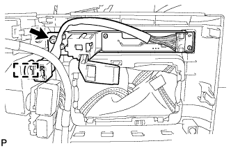
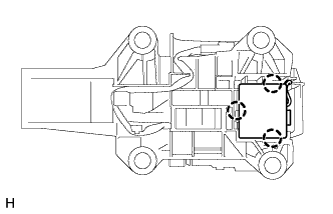

SHIFT LEVER > DISASSEMBLY |
| 1. REMOVE SHIFT POSITION INDICATOR |
|  |
Detach the connector clamp.
Remove the screw and shift position indicator from the upper console panel.
| 2. REMOVE SHIFT LOCK CONTROL ECU SUB-ASSEMBLY |
Disconnect the shift lock solenoid connector from the shift lock control ECU.
|  |
Detach the 3 claws and remove the shift lock control ECU from the transmission floor shift.